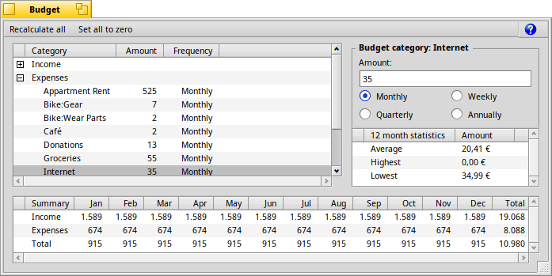

Budget
If you want to have extra money, you need a budget. While you are the only one who knows what is a good choice for the amount to put into each category, Capital Be gives you the tools to make the best decisions more easily.

There are four parts:
- this lists each category, the amount set aside for it, and the period of time for which you are allocating the money, such as each week or month.
- making changes here will change the item you've chosen in the category list.
- displays information about the category selected in the category list. The information includes the biggest and smallest transactions and the average monthly spending over the past 12 months for the chosen category.
- shows what your budget looks like over the course of a year.
How to make a budget
When you open the Budget window for the first time, it automatically generates a budget for you, based on your spending for the past 12 months. This is only a starting point.
You get back to the auto-generated budget by clicking in the menu bar.
This will remove any budget plans you may have entered!
in the menu bar will erase all auto-generated or manually edited values!
Click on each item in the for which you want to set aside money and type in the amount in the on the right. Unless you've seen a significant change in your financial situation in the last year, choosing an amount which is just a little more than the average is a good idea unless the amount is not expected to change.
Make sure that there is some money left over to account for unexpected expenses — 5% of your monthly income is a good start.
Previous: Menus Next: Reports